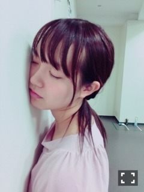

| 2016/08 09 Tue | 暑い毎日。(´>∀<｀)ゝ |
ちはるーむへようこそ( ◦˙ ˙◦ )
今日は椎木さんちの里佳と
少しの時間だったけど会えたよ〜♡
私の仕事の都合で
バタバタしちゃったけど
ちょっとでも会えてよかった！
里佳も凄い忙しいのに
時間合わせてもらって嬉しかった( ;o; )
やっぱり里佳はかっこいい！
よくメディアでも目にするし
凄いな〜といつも思ってます。
刺激になるし、尊敬する\( ˆ ˆ )/
そんな友人がいることに
喜びを感じます。
-------------------------♡
今日、めーちゃんが眠すぎて眠すぎたらしく
壁で寝てました。

疲れて眠かったから
どこかに寄りかかりたかったんだって。。
めーちゃんはいつでも可愛いです。
-------------------------♡
！ChihAnswer！
 すが⊿さん
すが⊿さん
(↑⊿マーク打てるようになった♡皆さんありがと♡)
・もし10年前の自分に一言言えるとしたら何が言いたい？
→9歳だと、小4か小3かな？
んー
「あなたの想像してない事が沢山起こるよ。
何事も楽しんでね！」
って言います\( ˆoˆ )/
♡ひなた♡さん
・大学生に休みはありますか？
→あるよ〜！
8月から、9月中旬くらいまで。
友達は帰省したり、バイトしたり、
サークル活動をしたり
沢山楽しんで頑張ってる！
私は中々まとまった休みは無いけど
学校がないと仕事やリハに
みんなと同じ時間から入れるので
大分夏休みは楽です！
実は全国ツアーの大阪は、
当日の昼までテストがあったので
現地リハには参加できず、
テスト終わりに直行していました(> <)
テスト命の大学生にとって
夏休みは至福の時間です。
Kitsunezaka46さん
・いつも写真が綺麗だけど、スマホ？デジカメ？
→わ〜！( ;o; )
その言葉凄い嬉しい...！！
写真は全部スマホだよ〜
いいカメラが欲しいんだけど、
種類がたくさんあって迷うんだ(> <)
私の理想は持ち運びが便利で
フォーカスの仕方が簡単で
景色やお花、空を綺麗にとれる
(更に自撮り機能があれば嬉しい)
カメラなんだ(> <)！
皆さん何かオススメのカメラありますか？
みはるさん
・1人映画、1人焼肉、1人カラオケ、この中で１つちーちゃんがするとしたらどれ？
→1人映画と1人カラオケはよくするよ♪
だから1人焼肉してみたいな\( ˆoˆ )/笑
1人ランチも1人ラーメンも余裕だから
行けそうな気がする！！
yuri@黒縁メガネさん
・もしもドラ○えもんの秘密道具を１つだけ手に入れられるとしたら、何にしますか？
→多分ちょっと前の私だったら
色んなところに瞬間移動したいからって
どこでもドアにしてたと思う！
でも今なら、タケコプターかな♪
空を飛びながら、写真を撮りながら
世界中を一周してみたい\( ˆoˆ )/
もしもボックスもいいね♪
テキーラ敵ラ・カズさん
・リオ五輪やってるけど、ちーちゃんはテレビ観戦で独り言、歓声を声に出す派？それとも黙々と観る派？
→声に出しちゃう派(> <)！！
点が決まったり、いいタイムだったり、
いい演技だったり、勝ったりすると
おお！！って拍手しちゃいます。
いけ！いけ！頑張れ！
なども言います。笑
逆に失敗などがあったら
声に出しながら一緒に落ち込みます。
多分一緒に観戦したら楽しいよ(﹡ˆ ˆ﹡)
とんきちさん
・ブログのコメントっていつ見てるの？
→いつでもチェックしてるよ〜！
でも移動中とかが多いかな\( ˆoˆ )/
708⊿さん
・ちーちゃんは勉強する気が起きないときはどうやって切り替えてますか？
→んーとね、やる気が起きないときは
お風呂に入ったり、
少しだけボーッとしてみたり、
アイスやスープ等軽めの軽食を取ってみたり、
色々気分転換をしてみる！！
それでもダメなときは
エナジードリングに頼っちゃう。
それでもダメなときは
潔く寝る。笑
時間がまだある勉強ならば
やる気が起きない時に仕方なくやるよりも
やる気が少しでもある時に一気にやる方が
プラスになる気がするんだよね〜♪
今日はここまで〜(｡･o･｡)ﾉ
質問に答えようとすると、
しっかり答えたくなっちゃうから
中々数は答えられないんだけど
その分内容はたっぷりなはず...！！
いつも質問ありがとう(﹡ˆ ˆ﹡)
前髪、目にかかるくらいの長さ。
-------------------------♡
♬ ChihaMusic
「K」BUMP OF CHICKENさん
BUMP好きなの！？俺も好き！！
っていう声が多かったので
またまたBUMPさん。
この曲名が何故Kなのかっていうのか
その理由が分かってから、
私はもっとこの曲が、
BUMPさんが好きになりました。
なんて粋な演出。
素敵すぎて胸が熱くなります。
ヒントは、
聖なる夜 に K を足したら
聖なる騎士になる。
いや、もうこれ答え！？(> <)
とにかく聞いてみてください。
今日本当暑かったね(> <)
皆さん体調には本当気を付けて(> <)
おやすみ！
斎藤ちはる
コメント(248)
2016/08/09 23:24